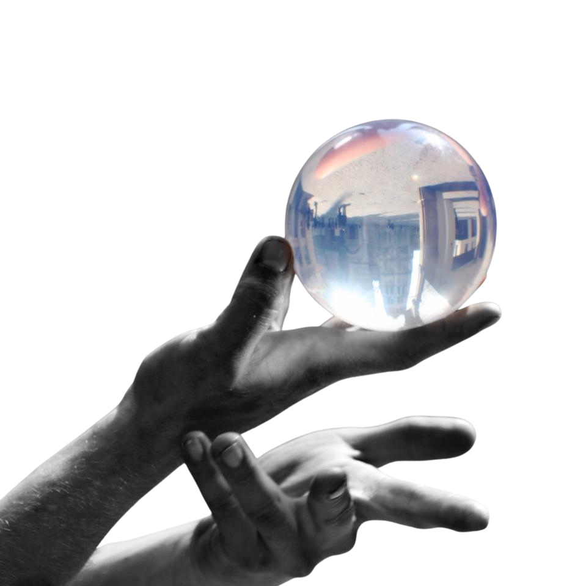

Jonglage de contact
L'art de faire flotter les balles
Qu'est-ce que le jonglage de contact ?
Le jonglage de contact est une discipline fascinante où les balles semblent flotter, rouler et glisser sur les mains comme par magie. Contrairement au jonglage traditionnel, les balles restent en contact permanent avec le corps, créant des illusions hypnotiques.
Cette technique utilise des balles acryliques transparentes qui, combinées à des mouvements fluides, donnent l'impression que la gravité n'existe plus. C'est un art visuel et méditatif qui demande patience et sensibilité.
Niveau
Tous niveaux
Âge minimum
8 ans
Matériel
Balles acryliques
Style
Fluide & hypnotique
